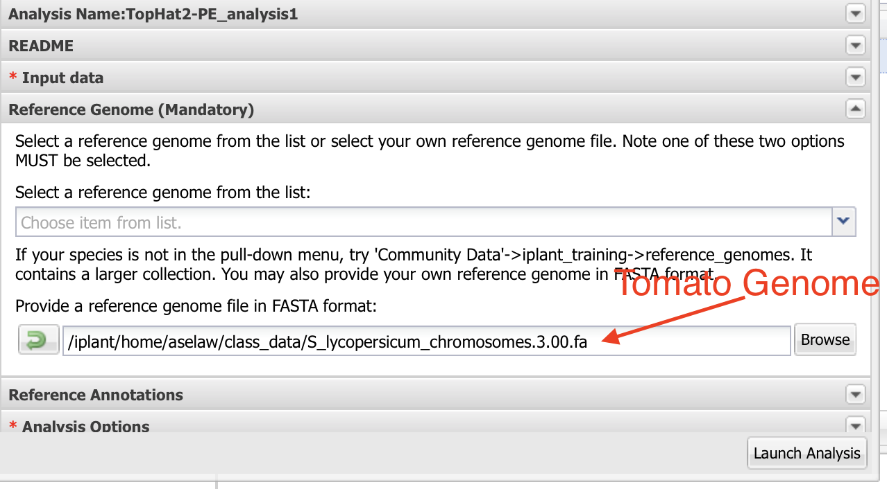

Mapping short reads¶
If you are using genome as the reference for RNAseq reads, you will need to use a splice-aware aligner like Tophat2. If you are using cDNA as the reference, you can use a general purpose aligner like Bowtie2.
You need to do only one of the procedures based on what your group have been assigned to.
Step 1: Mapping with Tophat2¶
- Click on App.
- In the finder window type “Tophat”
Select “Tophat2-PE”.

- As indicated in the figure, Name your analysis as you want.
- Select the output folder where your analysis is going to be.
Click on “Input data”

- Click on the Green “+” sign.
8. Navigate to the folder where your samples are located. Select only the first read files. Click “OK”. You can select all three of your first read files.

- Scroll down and click on the “+” below “Fastq file(s) (Read 2 of paired end reads):”
Select “Reference Genome” and select the tomato genome sequence as input.

Make sure quality is Sanger and leave rest of the default values as they are. Launch the analysis.

Step 2: Mapping with Bowtie2¶
- Click on App.
- In the finder window type “Bowtie”.
Select Bowtie app indicated in the figure.

- As indicated in the figure, Name your analysis as you want.
Select the output folder where your analysis is going to be.

- Click on “Input”
8. Navigate to the folder where your samples are located. Select first and second read files. You can only input one sample at a time.
You need to name your output file carefully. For e.g., if it is heat1 sample, name the output as heat1.sam.

Select “Reference Index” and select the tomato cDNA sequence as input.

Select options. Set “Minimum fragment length” as 100 and “Maximum fragment length” as 600. Launch the analysis.